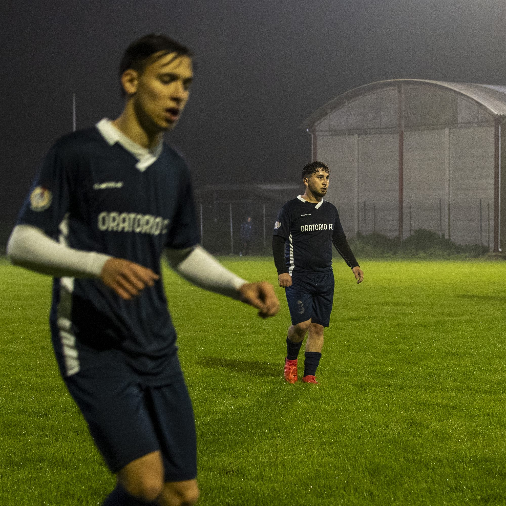

← Tutti i lavori
— Sport
Calcio Oratorio
Partite serali sotto i riflettori, con la nebbia sul campo: l'azione e i momenti fra un tempo e l'altro.
Ti serve un servizio così?
Raccontami che evento hai in mente e quando: ti rispondo con una proposta.
Scrivimi→